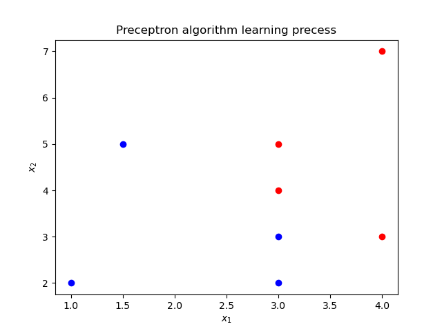

Preceptron algorithm
In machine learning, the perceptron is an algorithm for supervised learning of binary classfiers. The perceptron algorithm was invented 1958 at the Cornell Aeronautical lab by Frank Rosenblatt.
Perceptron model
For input space (featured space) $\mathcal{X} = {{\mathbf{R}}^{n}}$ and output space $\mathcal{Y} =\{-1, +1\}$, the perceptron model can be built by:
$$f(x) = sign(\omega \centerdot x+b)$$
$$sign(x) =
\begin{cases}
+1 & \text{if } x \ge 0,\\
-1 & \text{if } x < 0.
\end{cases}$$
where $\omega$ and $b$ are the weight and bias for the above function respectively. Through being trained by the give training data $T = \{ (x_0, y_0), (x_1, y_1), (x_2, y_2), \cdots, (x_N, y_N)\}$, where $x_i \in \mathcal{X} = {{\mathbf{R}}^{n}}$ and $y_i \in \mathcal{Y}=\{-1, +1\}$, $i = 1, 2, \cdots, N$. The parameters $\omega$ and $b$ can be leanned through the mentioned data set. The learned linear hyperplane can divide the training data into two parts labelling +1 and -1. The schematic diagram is shown as follows.

Perceptron strategy
In perceptron algorithm, the total distance to the hyperplane is defined to depict its cost function: $$L\left( \omega ,b \right)=-\sum\limits_{{{x}_{i}}\in M}{{{y}_{i}}\left( \omega \cdot {{x}_{i}}+b \right)}$$ where $M$ is misclassfication data set.
Perceptron learning algorithm
For the given training data set, the parameters $\omega$ and $b$ can be optimized by minimizing the cost function:
$$\underset{\omega ,b}{\mathop{\min }},L\left( \omega ,b \right)=-\sum\limits_{{{x}_{i}}\in M}{{{y}_{i}}\left( \omega \cdot {{x}_{i}}+b \right)}$$
We can use stochastic gradient descent method to solve the above optimized problem. Take partial derivative with respect to $\omega$ and $b$, the iteration strategy can be obtained:
$$\begin{align}
& \omega \leftarrow \omega +\eta {{y}_{i}}{{x}_{i}} \
& b\leftarrow b+\eta {{y}_{i}} \
\end{align}$$
where $\eta$ is a learning rate hyperparameter set by user.
Based on the aforementioned discussion, the perceptron algorithm can be derived: $\omega$, $b$
- Preceptron algorithm
- Input: training data set: $T = { (x_0, y_0), (x_1, y_1), (x_2, y_2), \cdots, (x_N, y_N)}$, $i = 1, 2, 3, \cdots, N$; learning rate $\eta (0 < \eta \le 1)$;
- Output: $\omega$, $b$ and preceptron model: $f(x) = sign(\omega \centerdot x+b)$
- Initialize $\omega_0, b_0$;
- while: Choosing the single instance $(x_i, y_i)$ from $T$ until no misclassfication data contained in the set;
- if $y_i \left( \omega \cdot x_i +b\right) \le 0$
- $\omega \leftarrow \omega +\eta {y_i}{x_i}$ and $b\leftarrow b+\eta {{y}_{i}}$
- endif
- end while
Implementing the algorithm in python3
from matplotlib import pyplot as plt
import numpy as np
from matplotlib.animation import FuncAnimation
# define a function to realize preceptron algorithm.
def PrecessingPreceptron(point, learning_rate):
w_set = []
b_set = []
w = np.array([0,0])
b = 0
flag = 1
while flag:
flag = 0
i = 0
for i in range(len(point)):
if point[i,2]*(np.matmul(w, point[i,0:2]) + b) <= 0:
w = w + learning_rate * point[i,0:2] * point[i,2]
b = b + learning_rate * point[i,2]
w_set.append(w)
b_set.append(b)
flag = 1
break
if flag == 0:
break
return w_set, b_set
# DrawFigure is used to draw the process
def DrawFigure(count, w_set, b_set, gap):
point_x_1 = 0
point_x_2 = 5
if count == 0:
line.set_data([], [])
return line,
if gap*count < len(w_set):
w = w_set[count*gap]
b = b_set[count*gap]
else:
w = w_set[-1]
b = b_set[-1]
if w[1] != 0:
point_y_1 = -(w[0] * point_x_1 + b) / w[1]
point_y_2 = -(w[0] * point_x_2 + b) / w[1]
thisx = np.array([point_x_1, point_x_2])
thisy = np.array([point_y_1, point_y_2])
line.set_data(thisx, thisy)
return line,
if __name__ == "__main__":
# define input data set
traning_data = np.array([[3, 4, 1],[4, 3, 1], [3,3,-1],[1,2,-1],[3,5,1],[4,7,1],[3,2,-1],[1.5,5,-1]])
learning_rate = 0.7
fig, ax = plt.subplots()
line, = ax.plot([], [], 'k-')
for index in range(len(traning_data)):
if traning_data[index,2] == 1:
ax.plot(traning_data[index, 0], traning_data[index, 1], 'ro')
else:
ax.plot(traning_data[index,0], traning_data[index,1],'bo')
plt.xlabel('$x_1$')
plt.ylabel('$x_2$')
plt.title('Preceptron algorithm learning precess')
w_set, b_set = PrecessingPreceptron(traning_data, learning_rate)
anim = FuncAnimation(fig, DrawFigure,frames=np.arange(0, 15), fargs=(w_set, b_set, 50), interval=300, blit=True)
anim.save('preceptron.gif', writer='imagemagick')
plt.show()
Results: 
Notes
- It can be testified that the perceptron algorithm could converge at last within the limited steps of iterations.
- The original algorithm have multiple solutions coming from: 1. The initial parameters $\omega_0, b_0$; 2. the selection order of misclassficated point in the learning process.
Yinyin SU
PhD student in Robotic and Control
My research interests include soft robotics, control and optimization, robotic system and dynamic.
{kind=link}